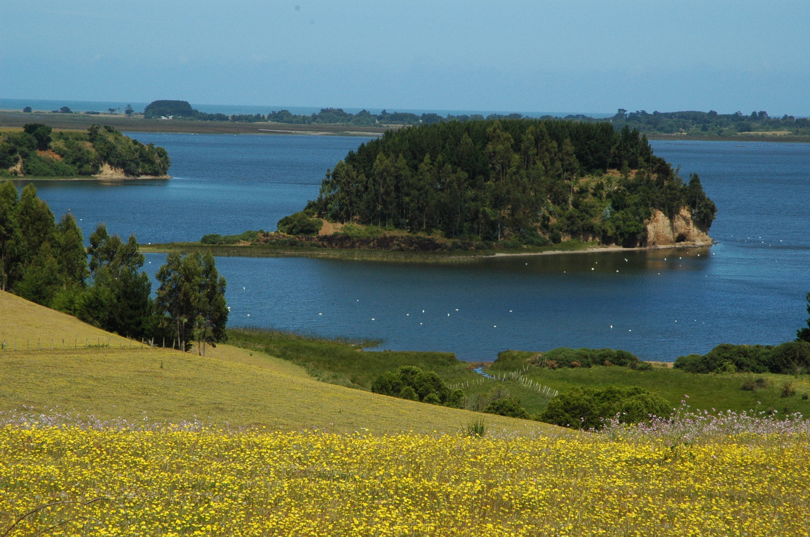

Alta
Alta
Trekking
Circuito Volcán Llaima
Recorrido de alta montaña que rodea el volcán Llaima, entre paisajes de lava y bosques de araucarias.
Ver detallesExplora rutas, actividades y experiencias sustentables en La Araucanía.
Cinco territorios para recorrer entre volcanes, bosques, lagos, costa y cultura viva.
Alta
Recorrido de alta montaña que rodea el volcán Llaima, entre paisajes de lava y bosques de araucarias.
Ver detalles Media
Media
Bosques de araucarias milenarias y miradores hacia la cordillera de la Costa en el Parque Nacional Nahuelbuta.
Ver detalles
BajaPedalea entre lagos, ríos y bosques nativos con vistas panorámicas a los volcanes de la región.
Ver detalles
Somos una plataforma de turismo sustentable dedicada a conectar a viajeros con la riqueza natural y cultural de La Araucanía. Trabajamos junto a comunidades locales, guías certificados y emprendedores mapuche para ofrecer experiencias auténticas y responsables.
Nuestro compromiso es con el territorio, su gente y el medioambiente. Cada ruta y actividad en EcoRuta Temuco sigue principios de mínimo impacto y máxima conexión cultural.
Volcanes, bosques y costa en un recorrido visual por el territorio.

Volcán Llaima · Araucanía Andina
Una región donde conviven volcanes activos, lagos milenarios y la sabiduría mapuche.
Parques nacionales y reservas de bosque nativo con flora y fauna endémica.
Rutas para todos los niveles con señalética clara y puntos de descanso.
Emprendimientos locales comprometidos con el medioambiente y las comunidades.
Consulta el pronóstico antes de salir. La Araucanía tiene temporadas lluviosas entre mayo y agosto.
Feria de Artesanía Mapuche · Festivales Lacustres · Semana de las Rutas Ecológicas.
Lleva abrigo, calzado de trekking, protector solar y suficiente agua en todas las rutas.
No dejes residuos. Respeta la fauna y flora. Apoya a los emprendimientos locales.
Si tienes una actividad o ruta turística sustentable en La Araucanía, escríbenos y forma parte de EcoRuta Temuco.